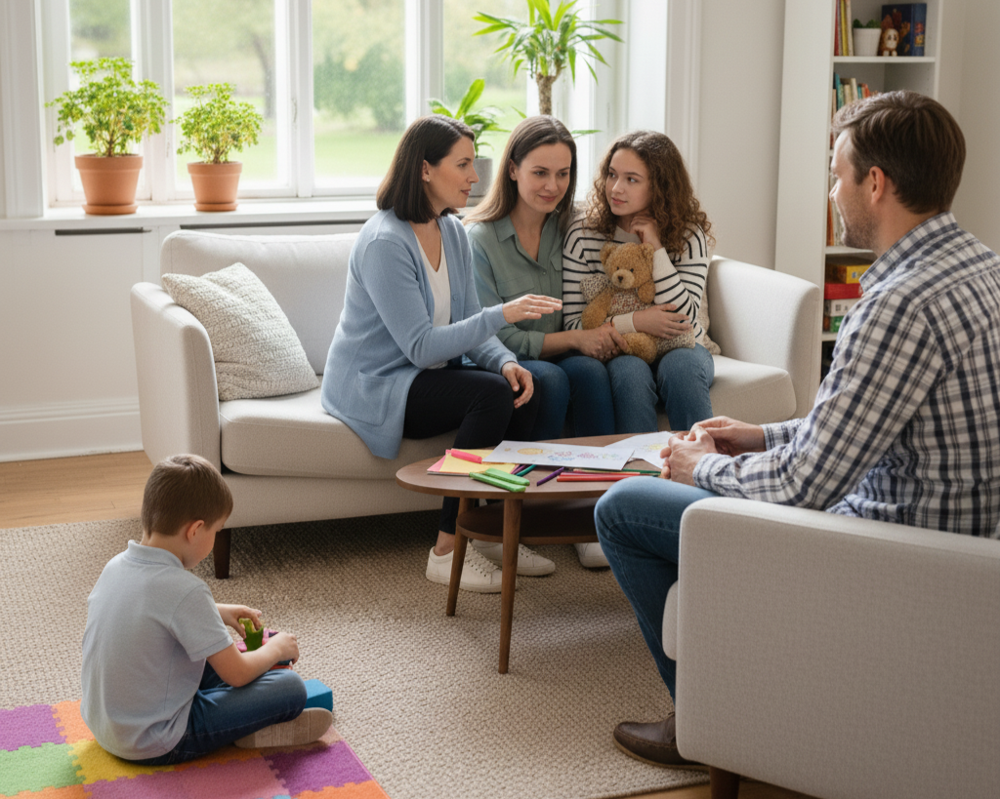
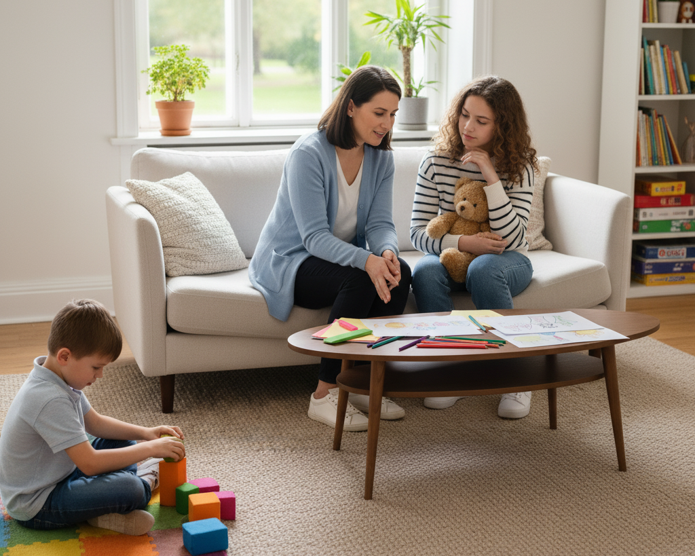
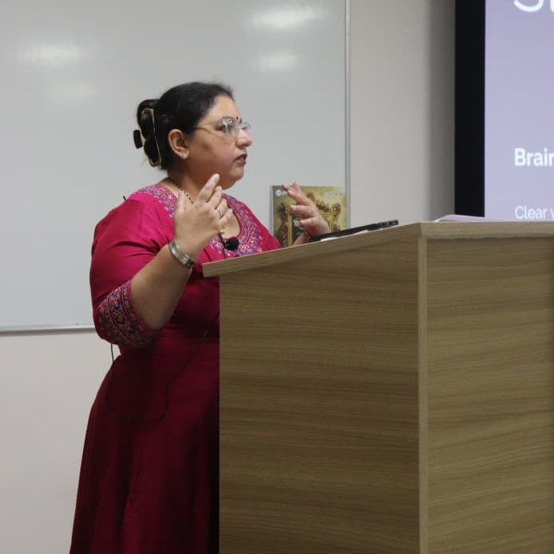
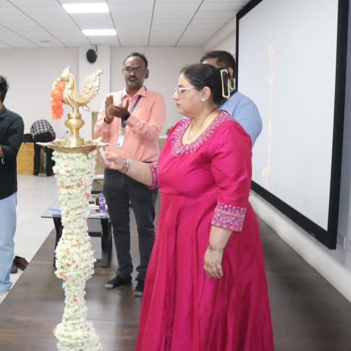

You Don't Have to Face Life's Challenges Alone.
Life can feel overwhelming at times. Whether you're dealing with stress, parenting challenges, relationship concerns, academic pressure, emotional struggles, or major life changes, you deserve a safe space where you can be heard, understood, and supported.
At Santasa Counselling, every session is guided by empathy, respect, and confidentiality, helping you find clarity, emotional balance, and practical ways to move forward.

"I finally felt heard without judgment. It wasn't about fixing me instantly, but understanding why I felt so broken, and slowly putting the pieces back together."
Female, 34
Sought help for chronic overwhelm
Disclaimer
Santasa Counselling provides non-clinical emotional support, focusing on everyday well-being, family harmony, and personal growth. We do not offer psychiatric diagnoses, medication, or clinical treatment. Our approach emphasizes empathetic conversation and practical strategies to help you navigate life’s challenges.
Your Emotional Well-being Matters
Life's responsibilities, stress, and unexpected challenges can leave you feeling emotionally exhausted. Counselling offers a safe space to understand your emotions, regain balance, and move forward with confidence.
Does Any of This Feel Like Your Reality?
- You feel emotionally drained.
- You constantly overthink.
- You struggle to relax.
- Everyday stress feels overwhelming.
- You feel stuck or uncertain.
- You're not feeling like yourself anymore.
"For the first time in years, my mind feels quieter, and I finally feel at peace with myself."
How We Can Work Through This Together?
- Understand your emotional experiences.
- Develop healthy coping strategies.
- Build resilience.
- Improve self-awareness.
- Create positive and lasting change.
What Your Journey May Look Like
- Step 1:Begin with a confidential conversation.
- Step 2:Understand your emotions and challenges.
- Step 3:Learn practical strategies for everyday life
- Step 4: Build emotional strength and confidence.
Imagine Feeling More Like Yourself Again
Greater Peace of Mind
Experience fewer overwhelming thoughts and feel calmer, more present, and better equipped to handle everyday life.
Emotional Balance
Build resilience, understand your emotions, and respond to life's ups and downs with greater confidence and clarity.
Healthier Relationships
Strengthen communication, rebuild trust, set healthy boundaries, and connect more deeply with the people who matter most.
"From the outside, everything looked fine—but inside, I felt emotionally drained every single day. I had forgotten what peace felt like. Counselling helped me understand my emotions instead of fighting them. I now set healthier boundaries, treat myself with kindness, and wake up feeling like I'm living my life instead of simply surviving it."
Female, 31
Rediscovering confidence & emotional balance
You Deserve to Feel Like Yourself Again
You don't have to keep carrying the weight of stress, anxiety, overwhelm, or self-doubt on your own. Taking the first step today can lead to a calmer mind, greater confidence, and lasting emotional well-being.
Strong Relationships Begin with Better Understanding
Every relationship experiences challenges. Counselling provides a safe and neutral space where couples and families can improve communication, rebuild trust, and strengthen their relationships.
Does Any of This Feel Like Your Reality?
- Communication often ends in arguments.
- You feel unheard or misunderstood.
- Trust has been affected.
- Emotional distance has increased.
- Conflicts remain unresolved.
- You want to reconnect but don't know where to begin.

"We didn't stop loving each other—we just forgot how to communicate. Counselling helped us find our way back."
How We Can Work Through This Together?
- Improve communication.
- Resolve conflicts respectfully.
- Rebuild trust.
- Strengthen emotional connection.
- Develop healthier relationship patterns.
What Your Journey May Look Like
- Step 1:Share your concerns openly.
- Step 2:Understand each other's perspectives.
- Step 3: Learn healthier communication skills.
- Step 4:Build a stronger relationship together.
Imagine Feeling More Like Yourself Again
Greater Peace of Mind
Experience fewer overwhelming thoughts and feel calmer, more present, and better equipped to handle everyday life.
Emotional Balance
Build resilience, understand your emotions, and respond to life's ups and downs with greater confidence and clarity.
Healthier Relationships
Strengthen communication, rebuild trust, set healthy boundaries, and connect more deeply with the people who matter most.
"We loved each other, but every disagreement turned into silence or blame. We had almost given up hope. Counselling helped us understand the patterns we kept repeating and taught us how to truly listen without defending ourselves. Our relationship feels lighter, safer, and more connected than it has in years."
Couple, 34 & 36
Rebuilding trust and communication
Every Relationship Deserves the Chance to Heal & Grow
Healthy relationships aren't about never having conflicts—they're about learning how to navigate them together. Whether you're rebuilding trust, improving communication, or reconnecting emotionally, support is just one conversation away.
Helping You Thrive Both Academically and Emotionally
Academic pressure, exams, career choices, and personal expectations can feel overwhelming. Counselling helps students build confidence, reduce stress, and develop healthy habits that support both learning and emotional well-being.

"Success stopped feeling like constant pressure. I learned how to believe in myself again."
Does This Feel Like What's Happening at Home?
- You feel anxious before exams.
- You struggle to concentrate.
- You're worried about your future.
- You lack confidence.
- You're finding it difficult to balance studies and personal life.
- Stress is affecting your daily routine.
How We Can Work Through This Together
- Manage academic stress.
- Improve focus and motivation.
- Build confidence.
- Develop healthy study habits.
- Improve emotional well-being.
What Your Family's Journey May Look Like
- Step 1:Understand your current challenges.
- Step 2: Identify what's creating stress.
- Step 3: Learn practical coping and study strategies.
- Step 4: Build confidence for future success.
"I was constantly exhausted, anxious before every exam, and convinced I wasn't good enough no matter how hard I studied. Counselling helped me break the cycle of perfectionism and self-doubt. My grades improved, but more importantly, I stopped measuring my worth by my marks. I now study with confidence instead of fear."
Male, 21
University student overcoming academic stress
Your Success Shouldn't Come at the Cost of Your Well-being
Academic pressure, career uncertainty, and self-doubt don't have to define your student journey. Together, we can help you manage stress, build confidence, and thrive both inside and outside the classroom.
Reach out to discuss how we can support your specific family dynamic.
Parenting Doesn't Have to Feel So Overwhelming
Every parent wants the best for their child, but parenting can sometimes feel confusing, stressful, and emotionally exhausting. Whether you're dealing with behavioural concerns, communication difficulties, emotional outbursts,academic pressure, or everyday parenting challenges, you don't have to face them alone. At Santasa Counselling, you'll find a safe and supportive space to understand your child better, strengthen your relationship, and build practical parenting skills that work for your family.
Does Any of This Feel Like Your Reality?
- Your child doesn't listen or communicate with you.
- Everyday conversations turn into arguments.
- Your child seems anxious, angry, withdrawn, or emotionally sensitive.
- You're worried about your child's behaviour or school performance.
- YYou often question whether you're parenting the right way.
- You feel emotionally drained trying to balance everything.

"I stopped trying to be a perfect parent. Learning to truly understand my child changed everything."
How We Can Work Through This Together?
- Understand your child's emotional and behavioural needs.
- Improve communication within your family.
- Learn practical parenting strategies.
- Handle challenging situations with confidence.
- Build a stronger and healthier parent-child relationship.
What Your Journey May Look Like
- Step 1: Share your concerns in a safe and confidential space.
- Step 2: Understand your child's behaviour and emotional needs.
- Step 3: Learn practical parenting strategies.
- Step 4: Build stronger family relationships and lasting confidence.
Imagine Feeling More Like Yourself Again
Greater Peace of Mind
Experience fewer overwhelming thoughts and feel calmer, more present, and better equipped to handle everyday life.
Emotional Balance
Build resilience, understand your emotions, and respond to life's ups and downs with greater confidence and clarity.
Healthier Relationships
Strengthen communication, rebuild trust, set healthy boundaries, and connect more deeply with the people who matter most.
"I thought I was failing as a parent because every conversation with my 10-year-old ended in tears or arguments. I kept reading parenting advice, but nothing seemed to work. Through counselling, I realized my child wasn't being 'difficult'—they were asking to be understood. Today, our home feels calmer, our communication is stronger, and I finally feel confident in my parenting instead of constantly questioning myself."
Female, 37
Mother navigating parenting challenges
You Don't Have to Figure It Out Alone
Parenting doesn't come with a manual, and every child is different. Whether you're facing daily struggles, emotional outbursts, or simply want to strengthen your relationship with your child, support is here to help you parent with confidence—not guilt.
Helping Your Child Feel Safe, Confident and Understood
Children experience emotions just like adults, but they often express them through their behaviour. Counselling helps children understand their feelings,develop healthy coping skills, and build confidence in a supportive and caring environment.

"My child smiles more, talks more, and finally feels safe expressing their feelings."
Does This Feel Like What's Happening at Home?
- Your child struggles to express emotions.
- Your child has frequent tantrums or emotional outbursts.
- Your child has become withdrawn or unusually quiet.
- Your child struggles with confidence or friendships.
- You're concerned about your child's emotional well-being.
How We Help Families Reconnect
- Help your child recognise and express emotions.
- Improve emotional regulation.
- Build confidence and resilience.
- Strengthen communication.
- Support healthy emotional development.
What Your Journey May Look Like
- Step 1: Build trust through a safe and child-friendly environment.
- Step 2: Understand your child's emotions and experiences.
- Step 3: Develop healthy emotional and social skills.
- Step 4: Encourage positive growth and confidence.
"Our son stopped talking about school and became withdrawn after a difficult year. We didn't know how to reach him. Counselling gave him a safe space to express feelings he couldn't put into words at home. Watching him smile again, make friends, and confidently share his emotions has been one of the greatest gifts our family has received."
Parents of a 9-year-old
Helping their child rebuild confidence
Every Child Deserves to Feel Safe, Heard & Understood
Children often express emotions through their behaviour rather than words. Early support can help them build confidence, emotional resilience, and healthy coping skills that last a lifetime.
Reach out to discuss how we can support your specific family dynamic.
Growing Up Is Challenging—You Don't Have to Face It Alone
The teenage years can bring emotional ups and downs, academic pressure,identity questions, and relationship challenges. Counselling provides a supportive space where teenagers can talk openly, understand themselves better, and build confidence.
Does Any of This Feel Like Your Reality?
- You feel stressed or overwhelmed.
- School or exams feel like too much pressure.
- You struggle with confidence or self-esteem.
- You find it difficult to express your emotions.
- You often feel misunderstood.
- You're unsure about your future.
"I realized I didn't have to have my whole life figured out. I just needed someone who listened."
How We Can Work Through This Together?
- Understand your emotions.
- Build confidence and resilience.
- Learn healthy coping skills.
- Improve communication.
- Develop problem-solving skills.
What Your Journey May Look Like
- Step 1: A safe space where you can talk freely.
- Step 2: Understand your thoughts and emotions.
- Step 3: Learn practical ways to manage challenges.
- Step 4: Move forward with confidence.
Imagine Feeling More Like Yourself Again
Greater Peace of Mind
Experience fewer overwhelming thoughts and feel calmer, more present, and better equipped to handle everyday life.
Emotional Balance
Build resilience, understand your emotions, and respond to life's ups and downs with greater confidence and clarity.
Healthier Relationships
Strengthen communication, rebuild trust, set healthy boundaries, and connect more deeply with the people who matter most.
"I felt like no one understood what was happening inside my head. The pressure to do well, fit in, and figure out my future became overwhelming. Counselling didn't magically erase my problems—it gave me the tools to handle them. For the first time in a long time, I feel hopeful about who I'm becoming instead of scared of what's next."
Female, 17
Managing academic pressure & anxiety
Your Teen Doesn't Have to Face It Alone
Growing up comes with pressure, uncertainty, and emotional challenges. A safe, judgment-free space can help your teen build confidence, resilience, and healthier ways to navigate life's ups and downs.
You Don't Have to Face Life's Challenges Alone
Life isn't always easy. Some days, you may feel overwhelmed, anxious, emotionally exhausted, or unsure of where to turn. You might be navigating relationship conflicts, parenting struggles, academic pressure, workplace stress, or simply carrying emotions that feel too heavy to manage alone.
At Santasa Counselling, we provide a safe, confidential, and non-judgmental space where children, teenagers, adults, couples, parents, and families can feel heard, understood, and supported.
Together, we'll work towards greater emotional well-being, healthier relationships, stronger resilience, and a more fulfilling life.


"My child smiles more, talks more, and finally feels safe expressing their feelings."
How Can We Help You?
- Emotional Wellness
- Anxiety and overwhelming thoughts
- Stress and emotional burnout
- Parenting challenges
- Relationship conflicts
- Academic or career pressure
- Family misunderstandings
- Low confidence or self-esteem
- Life transitions and personal struggles
Why Choose Santasa Counselling?
- A safe and confidential environment
- Compassionate, non-judgmental support
- Personalised guidance tailored to your needs
- Practical tools for everyday life
- Evidence-informed counselling techniques
- Support for individuals, couples, children, teenagers, and families
Because healing begins when you feel truly heard. At Santasa Counselling, every session is built around you—your experiences, your emotions, and your goals. You'll find:

"I stopped trying to be a perfect parent. Learning to truly understand my child changed everything."
"My child smiles more, talks more, and finally feels safe expressing their feelings."
Meet Your Counsellor
Guidance Every Step of the Way
Behind Santasa Counselling is Keerthi B Nadig, a passionate Emotional Wellness Counsellor dedicated to helping people navigate life's challenges with empathy, respect, and understanding.
She believes every individual has the strength to heal and grow, and she provides a safe, compassionate, and non-judgmental space where you feel heard and supported. Her counselling approach is client-centred and tailored to your needs, working alongside you to understand your emotions, build resilience, and support your personal growth. She has supported children, adolescents, adults, parents, couples, professionals, and families through challenges such as stress, anxiety, relationships, parenting, and life transitions, and clients often describe her as calm, approachable, and empathetic.
Qualifications & Professional Background
- Bachelor's Degree in Law (BA LLB)
- Advanced Certification in Counselling
- Diploma in Child Psychology
- Certified Emotional Wellness Counsellor
- Speaker
- Author
Keerthi B Nadig is committed to continuous professional development to provide ethical, informed, and compassionate care.

"I stopped trying to be a perfect parent. Learning to truly understand my child changed everything."

"My child smiles more, talks more, and finally feels safe expressing their feelings."
Recognition & Community Impact
- Wonder Women Wednesday
- Wonder Women Wednesday × Santasa Counselling
- Bishop Cotton Women's Law College
- Jain University
Santasa Counselling is proud to contribute to emotional wellness through counselling, education, and community engagement.
Featured In:
Invited As Chief Guest :
Our Approach
- Cognitive Behavioural Techniques (CBT)
- Solution-Focused Techniques
- Narrative Techniques
- Family-Centred Techniques
- Mindfulness Practices
- Emotional Regulation Tools
- Behavioural Strategies
Every person's story is unique.That's why no two counselling journeys are exactly the same.We believe that meaningful change happens when you feel safe enough to speak openly, understood without judgment, and supported with practical guidance.
Each session is personalised to your needs and may include evidence-informed approaches such as:
Our goal isn't simply to help you manage today's challenges—it's to help you build the confidence, resilience, and emotional well-being to navigate tomorrow's with greater ease.
"I stopped trying to be a perfect parent. Learning to truly understand my child changed everything."
"My child smiles more, talks more, and finally feels safe expressing their feelings."
Our Vision
We envision a world where seeking emotional support is seen as a sign of strength, not weakness.
At Santasa Counselling, we're committed to helping individuals and families build healthier relationships, understand themselves more deeply, and create lasting emotional well-being through empathy, connection, and compassionate guidance.
Free Resources
Tools and guides you can start using right now to find a little more calm and clarity in your day.
Free Resources
A practical starter kit with simple strategies to help your family reduce screen time, strengthen emotional connections, and build healthier digital habits.
Raising Emotinally Healthy Children in the Digital World
Helping parents raise emotionally healthy, resilient children in a rapidly evolving digital world.
Raising Emotinally Healthy Children in the Digital World
Helping parents raise emotionally healthy, resilient children in a rapidly evolving digital world.
Frequently Asked Questions
It's normal to have questions before starting counselling. Here are some of the things people often ask.
What is counselling?
Counselling is a professional and confidential process where a trained counsellor works with individuals, couples, or families to explore and address emotional and relational challenges. It offers a safe, non-judgmental space for people to openly share their thoughts, feelings, and concerns. Through active listening, empathy, and supportive techniques, counselling helps foster self-awareness, emotional healing, and personal growth.
How can Santasa help?
Santasa Counselling offers an empathetic, non-judgmental approach led by a counsellor qualified in Advanced Counselling and Child Psychology. We provide flexible sessions, both online and in person, to support families, parents, and children in:
When to choose counselling??
Counselling can be helpful when you feel overwhelmed, stuck, or unsure how to manage life’s challenges on your own. You may consider counselling if you’re experiencing:
What to expect from counselling?
You can expect a safe, confidential, and non-judgmental space where you are met with genuine empathy and respect. The counselling process includes:
Do you offer sessions for individuals, couples, or families?
Yes! We offer sessions for students, parents, individuals, working professionals, couples, and families - both online and in person, in English, Kannada and Hindi. We provide non-clinical support for emotional well-being.
How long is a typical counselling session?
Session lengths may vary depending on your individual needs and the type of counselling (individual, family, or child). The exact duration will be discussed and confirmed when you schedule your appointment.
In which languages do you offer support?
We provide support in English, Kannada, and Hindi.
Are the sessions confidential?
Yes, we provide a safe, non-clinical, and confidential space for every client.
What is the difference between non-clinical counselling and clinical therapy?
Non-clinical counselling helps you feel better in your everyday life, improve relationships, and grow personally through talks and practical guidance. We support individuals and families in handling life changes, improving communication, managing stress, and building confidence. Unlike clinical treatment, we do not provide diagnosis or medication — our focus is on listening, understanding, and offering helpful strategies.
Still have questions? I'm happy to answer them.
Your story isn't over.
This is just a difficult chapter.
Reaching out for help doesn't mean you are broken. It means you are courageous enough to realize you deserve better than feeling stuck, overwhelmed, or disconnected.
What happens next?
- Send a message on the phone number below or call directly.
- We'll schedule a free, no-pressure 15-minute phone consultation.
- We'll discuss what you're struggling with and see if my approach feels like a safe fit for you.
- If it's a yes, we book your first session and begin the work.
Online & Offline Sessions
Appointments Only | All Days 11 a.m.–7 p.m.